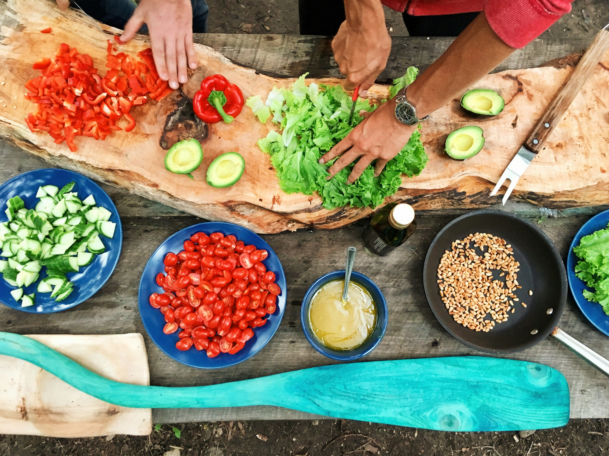
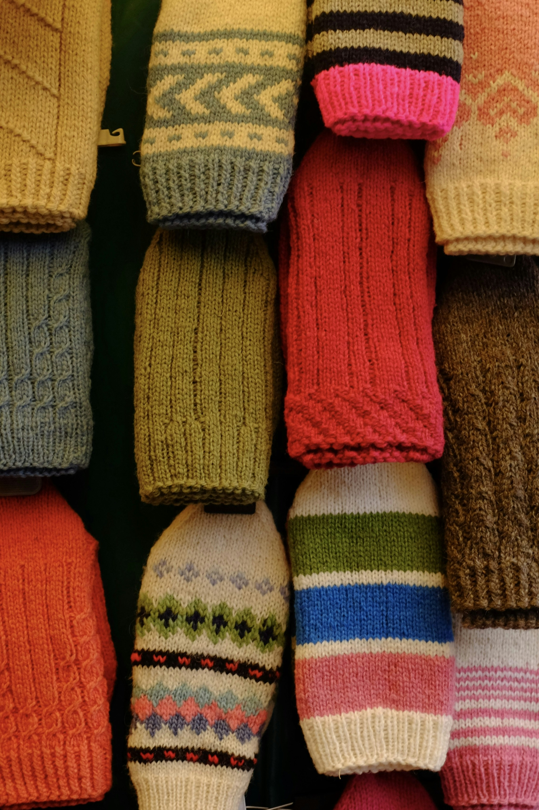

بيانات توضيحية ونموذج واجهة (Demo)
برامجنا ومشاريعنا الخيرية
استعراض تفاعلي لأبرز مسارات الدعم التنموي والإغاثي للأسر
كفالة ورعاية
كفالة الأيتام
رعاية متكاملة للأيتام تشمل الاحتياجات المعيشية، التعليمية، والكسوة لتوفير حياة كريمة ومستقبل مشرق.
المستهدف: 75 يتيماً
تم كفالة 60%

إغاثة وإطعامالسلال الغذائية للأسر
تأمين الاحتياجات التموينية الأساسية للأسر المتعففة والأشد حاجة في قرى ومراكز محافظة العيدابي.
المستهدف: 350 أسرة
تم تأمين 80%
 تنمية وتعليم
تنمية وتعليم
دعم الطلاب والتعليم
تأمين الحقيبة المدرسية والأجهزة اللوحية والكسوة لطلاب الأسر المحتاجة لمساعدتهم على مواصلة تعليمهم.
المستهدف: 200 طالب
تم دعم 45%

$ إغاثة موسميةالكسوة ودفء الشتاء
توفير الملابس الشتوية والبطانيات ووسائل التدفئة الآمنة لحماية الأسر المتعففة من قسوة البرد.
المستهدف: 150 أسرة
تم تغطية 30%